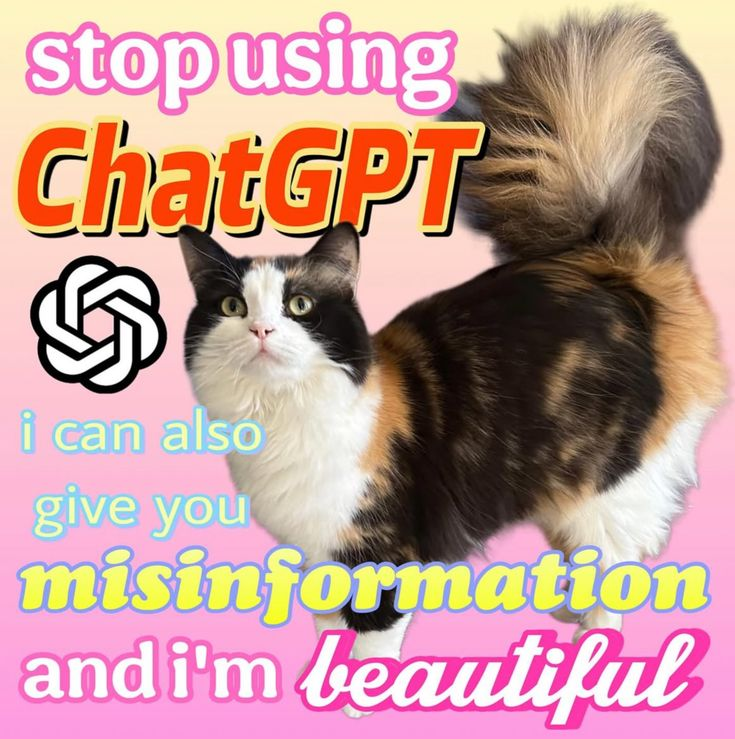

Notes by Aradia Aguilar-Vargas
This site compiles the content seen during our lectures* to study and prepare for assignments.
There should be maybe two or three posts with class notes in total by the end of the semester.
If you don't know what I'm talking about, maybe you shouldn't be here...
* The content which I was assigned to compile.
The cats present in the background are (in order: left-to-right, top-to-bottom before loop): [Lis, Komi, Aoi], Las Tres Marías, Atolín's new BFF, Atún, Tamal, Coco, Osita, Susy, Dominic's cat, Tigresa, Salem, Pancha, Taffy, Evil Osita, Nami, Gatita, Machito, Ligio, maybe Tomás, and Tigra.
Special thanks to ChatGPT for absolutely ruining online browsing.

idk whose cat this is